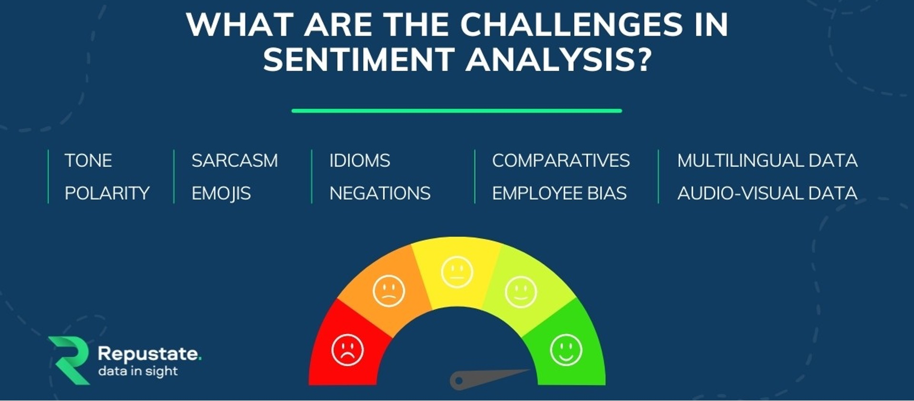

Chapter 7 - English text preprocessing basics - and applications
Contents
Chapter 7 - English text preprocessing basics - and applications#
2022 August 26

Unstructured text - text you find in the wild in books and websites - is generally not amenable to analysis. Before it can be analyzed, the text needs to be standardized to a format so that Python can recognize each unit of meaning (called a “token”) as unique, no matter how many times it occurs and how it is stylized.
Although not an exhaustive list, some key steps in preprocessing text include:
Standardize text casing and spacing
Remove punctuation and special characters/symbols
Remove stop words
Stem or lemmatize: convert all non-base words to their base form
Stemming/lemmatization and stop words (and some punctuation) are language-specific. The Natural Language ToolKit (NLTK) works for English out-of-the-box, but you’ll need different code to work with other languages. Some languages (e.g. Chinese) also require segmentation: artificially inserting spaces between words. If you want to do text pre-processing for other languages, please let us know and we can help!
# Ensure you have the proper nltk modules
import nltk
nltk.download('words')
nltk.download('stopwords')
nltk.download('wordnet')
nltk.download('averaged_perceptron_tagger')
nltk.download('maxent_ne_chunker')
nltk.download('omw-1.4')
[nltk_data] Downloading package words to
[nltk_data] /Users/evanmuzzall/nltk_data...
[nltk_data] Package words is already up-to-date!
[nltk_data] Downloading package stopwords to
[nltk_data] /Users/evanmuzzall/nltk_data...
[nltk_data] Package stopwords is already up-to-date!
[nltk_data] Downloading package wordnet to
[nltk_data] /Users/evanmuzzall/nltk_data...
[nltk_data] Package wordnet is already up-to-date!
[nltk_data] Downloading package averaged_perceptron_tagger to
[nltk_data] /Users/evanmuzzall/nltk_data...
[nltk_data] Package averaged_perceptron_tagger is already up-to-
[nltk_data] date!
[nltk_data] Downloading package maxent_ne_chunker to
[nltk_data] /Users/evanmuzzall/nltk_data...
[nltk_data] Package maxent_ne_chunker is already up-to-date!
[nltk_data] Downloading package omw-1.4 to
[nltk_data] /Users/evanmuzzall/nltk_data...
[nltk_data] Package omw-1.4 is already up-to-date!
True
from nltk.corpus import stopwords
from nltk.stem import WordNetLemmatizer
from nltk.stem.porter import PorterStemmer
from string import punctuation
import pandas as pd
import seaborn as sns
from collections import Counter
import regex as re
import os
import pandas as pd
from sklearn.feature_extraction.text import CountVectorizer, TfidfVectorizer, TfidfTransformer
import spacy
import nltk
from nltk.corpus import movie_reviews
import numpy as np
from sklearn.utils import shuffle
from sklearn.pipeline import Pipeline
from sklearn.linear_model import LogisticRegression
from sklearn.model_selection import cross_val_score, train_test_split
from sklearn.metrics import roc_curve, roc_auc_score, classification_report, accuracy_score, confusion_matrix
import warnings
warnings.filterwarnings("ignore", category = DeprecationWarning)
---------------------------------------------------------------------------
ModuleNotFoundError Traceback (most recent call last)
Input In [2], in <cell line: 13>()
11 import pandas as pd
12 from sklearn.feature_extraction.text import CountVectorizer, TfidfVectorizer, TfidfTransformer
---> 13 import spacy
14 import nltk
15 from nltk.corpus import movie_reviews
ModuleNotFoundError: No module named 'spacy'
Corpus definition: United Nations Human Rights Council Documentation#

We will select eleven .txt files from the UN HRC as our corpus, stored within the subfolder “human_rights” folder inside the main “data” directory.
These documents contain information about human rights recommendations made by member nations towards countries deemed to be in violation of the HRC.
Learn more about the UN HRC by clicking here.
Define the corpus directory#
Set the directory’s file path and print the files it contains.
# Make the directory "human_rights" inside of data
!mkdir data
!mkdir data/human_rights
mkdir: data: File exists
mkdir: data/human_rights: File exists
# If your "data" folder already exists in Colab and you want to delete it, type:
# !rm -r data
# If the "human_rights" folder already exists in Colab and you want to delete it, type:
# !rm -r data/human_rights
# Download elevent UN HRC files
# !wget -P data/human_rights/ https://raw.githubusercontent.com/EastBayEv/SSDS-TAML/main/fall2022/data/human_rights/afghanistan2014.txt
# !wget -P data/human_rights/ https://raw.githubusercontent.com/EastBayEv/SSDS-TAML/main/fall2022/data/human_rights/bangladesh2013.txt
# !wget -P data/human_rights/ https://raw.githubusercontent.com/EastBayEv/SSDS-TAML/main/fall2022/data/human_rights/cotedivoire2014.txt
# !wget -P data/human_rights/ https://raw.githubusercontent.com/EastBayEv/SSDS-TAML/main/fall2022/data/human_rights/djibouti2013.txt
# !wget -P data/human_rights/ https://raw.githubusercontent.com/EastBayEv/SSDS-TAML/main/fall2022/data/human_rights/fiji2014.txt
# !wget -P data/human_rights/ https://raw.githubusercontent.com/EastBayEv/SSDS-TAML/main/fall2022/data/human_rights/jordan2013.txt
# !wget -P data/human_rights/ https://raw.githubusercontent.com/EastBayEv/SSDS-TAML/main/fall2022/data/human_rights/kazakhstan2014.txt
# !wget -P data/human_rights/ https://raw.githubusercontent.com/EastBayEv/SSDS-TAML/main/fall2022/data/human_rights/monaco2013.txt
# !wget -P data/human_rights/ https://raw.githubusercontent.com/EastBayEv/SSDS-TAML/main/fall2022/data/human_rights/sanmarino2014.txt
# !wget -P data/human_rights/ https://raw.githubusercontent.com/EastBayEv/SSDS-TAML/main/fall2022/data/human_rights/turkmenistan2013.txt
# !wget -P data/human_rights/ https://raw.githubusercontent.com/EastBayEv/SSDS-TAML/main/fall2022/data/human_rights/tuvalu2013.txt
# Check that we have eleven files, one for each country
!ls data/human_rights/
afghanistan2014.txt fiji2014.txt sanmarino2014.txt
bangladesh2013.txt jordan2013.txt turkmenistan2013.txt
cotedivoire2014.txt kazakhstan2014.txt tuvalu2013.txt
djibouti2013.txt monaco2013.txt
import os
corpus = os.listdir('data/human_rights/')
# View the contents of this directory
corpus
['sanmarino2014.txt',
'tuvalu2013.txt',
'kazakhstan2014.txt',
'cotedivoire2014.txt',
'fiji2014.txt',
'bangladesh2013.txt',
'turkmenistan2013.txt',
'jordan2013.txt',
'monaco2013.txt',
'afghanistan2014.txt',
'djibouti2013.txt']
Store these documents in a data frame#
# Store in an empty dictionary for conversion to data frame
empty_dictionary = {}
# Loop through the folder of documents to open and read each one
for document in corpus:
with open('data/human_rights/' + document, 'r', encoding = 'utf-8') as to_open:
empty_dictionary[document] = to_open.read()
# Populate the data frame with two columns: file name and document text
human_rights = (pd.DataFrame.from_dict(empty_dictionary,
orient = 'index')
.reset_index().rename(index = str,
columns = {'index': 'file_name', 0: 'document_text'}))
View the data frame#
human_rights
| file_name | document_text | |
|---|---|---|
| 0 | sanmarino2014.txt | \n United Nations \n A/HRC/28/9 \n \n \n\n Ge... |
| 1 | tuvalu2013.txt | \n United Nations \n A/HRC/24/8 \n \n \n\n G... |
| 2 | kazakhstan2014.txt | \n United Nations \n A/HRC/28/10 \n \n \n\n G... |
| 3 | cotedivoire2014.txt | \nDistr.: General 7 July 2014 English Original... |
| 4 | fiji2014.txt | \n United Nations \n A/HRC/28/8 \n \n \n\n Ge... |
| 5 | bangladesh2013.txt | \n United Nations \n A/HRC/24/12 \n \n \n\n ... |
| 6 | turkmenistan2013.txt | \n United Nations \n A/HRC/24/3 \n \n \n\n G... |
| 7 | jordan2013.txt | \nDistr.: General 6 January 2014 \nOriginal: E... |
| 8 | monaco2013.txt | \nDistr.: General 3 January 2014 English Origi... |
| 9 | afghanistan2014.txt | \nDistr.: General 4 April 2014 \nOriginal: Eng... |
| 10 | djibouti2013.txt | \n\nDistr.: General 8 July 2013 English Origin... |
View the text of the first document#
# first thousand characters
print(human_rights['document_text'][0][:1000])
United Nations
A/HRC/28/9
General Assembly
Distr.: General
24 December 2014
Original: English
Human Rights Council
Twenty-eighth session
Agenda item 6
Universal Periodic Review
Report of the Working Group on the Universal Periodic Review*
* The annex to the present report is circulated as received.
San Marino
Contents
Paragraphs Page
Introduction ............................................................................................................. 1Ð4 3
I. Summary of the proceedings of the review process ................................................ 5Ð77 3
A. Presentation by the State under review ........................................................... 5Ð23 3
B. Interactive dialogue and responses by the State under review ........................ 24Ð77 6
II. Conclusions and/or recommendations ..................................................................... 78Ð81 13
Annex
Composition of the delegation .......
English text preprocessing#
Create a new column named “clean_text” to store the text as it is preprocessed.
What are some of the things we can do?#
These are just a few examples. How else could you improve this process?
Remove non-alphanumeric characters/punctuation
Remove digits
Remove unicode characters
Remove extra spaces
Convert to lowercase
Lemmatize (optional for now)
Take a look at the first document after each step to see if you can notice what changed.
Remember: the process will likely be different for many other natural languages, which frequently require special considerations.
Remove non-alphanumeric characters/punctuation#
# Create a new column 'clean_text' to store the text we are standardizing
human_rights['clean_text'] = human_rights['document_text'].str.replace(r'[^\w\s]', ' ', regex = True)
print(human_rights['clean_text'][0][:1000])
United Nations
A HRC 28 9
General Assembly
Distr General
24 December 2014
Original English
Human Rights Council
Twenty eighth session
Agenda item 6
Universal Periodic Review
Report of the Working Group on the Universal Periodic Review
The annex to the present report is circulated as received
San Marino
Contents
Paragraphs Page
Introduction 1Ð4 3
I Summary of the proceedings of the review process 5Ð77 3
A Presentation by the State under review 5Ð23 3
B Interactive dialogue and responses by the State under review 24Ð77 6
II Conclusions and or recommendations 78Ð81 13
Annex
Composition of the delegation
# view third column
human_rights
| file_name | document_text | clean_text | |
|---|---|---|---|
| 0 | sanmarino2014.txt | \n United Nations \n A/HRC/28/9 \n \n \n\n Ge... | \n United Nations \n A HRC 28 9 \n \n \n\n Ge... |
| 1 | tuvalu2013.txt | \n United Nations \n A/HRC/24/8 \n \n \n\n G... | \n United Nations \n A HRC 24 8 \n \n \n\n G... |
| 2 | kazakhstan2014.txt | \n United Nations \n A/HRC/28/10 \n \n \n\n G... | \n United Nations \n A HRC 28 10 \n \n \n\n G... |
| 3 | cotedivoire2014.txt | \nDistr.: General 7 July 2014 English Original... | \nDistr General 7 July 2014 English Original... |
| 4 | fiji2014.txt | \n United Nations \n A/HRC/28/8 \n \n \n\n Ge... | \n United Nations \n A HRC 28 8 \n \n \n\n Ge... |
| 5 | bangladesh2013.txt | \n United Nations \n A/HRC/24/12 \n \n \n\n ... | \n United Nations \n A HRC 24 12 \n \n \n\n ... |
| 6 | turkmenistan2013.txt | \n United Nations \n A/HRC/24/3 \n \n \n\n G... | \n United Nations \n A HRC 24 3 \n \n \n\n G... |
| 7 | jordan2013.txt | \nDistr.: General 6 January 2014 \nOriginal: E... | \nDistr General 6 January 2014 \nOriginal E... |
| 8 | monaco2013.txt | \nDistr.: General 3 January 2014 English Origi... | \nDistr General 3 January 2014 English Origi... |
| 9 | afghanistan2014.txt | \nDistr.: General 4 April 2014 \nOriginal: Eng... | \nDistr General 4 April 2014 \nOriginal Eng... |
| 10 | djibouti2013.txt | \n\nDistr.: General 8 July 2013 English Origin... | \n\nDistr General 8 July 2013 English Origin... |
Remove digits#
human_rights['clean_text'] = human_rights['clean_text'].str.replace(r'\d', ' ', regex = True)
print(human_rights['clean_text'][0][:1000])
United Nations
A HRC
General Assembly
Distr General
December
Original English
Human Rights Council
Twenty eighth session
Agenda item
Universal Periodic Review
Report of the Working Group on the Universal Periodic Review
The annex to the present report is circulated as received
San Marino
Contents
Paragraphs Page
Introduction Ð
I Summary of the proceedings of the review process Ð
A Presentation by the State under review Ð
B Interactive dialogue and responses by the State under review Ð
II Conclusions and or recommendations Ð
Annex
Composition of the delegation
Remove unicode characters such as Ð and ð#
# for more on text encodings: https://www.w3.org/International/questions/qa-what-is-encoding
human_rights['clean_text'] = human_rights['clean_text'].str.encode('ascii', 'ignore').str.decode('ascii')
print(human_rights['clean_text'][0][:1000])
United Nations
A HRC
General Assembly
Distr General
December
Original English
Human Rights Council
Twenty eighth session
Agenda item
Universal Periodic Review
Report of the Working Group on the Universal Periodic Review
The annex to the present report is circulated as received
San Marino
Contents
Paragraphs Page
Introduction
I Summary of the proceedings of the review process
A Presentation by the State under review
B Interactive dialogue and responses by the State under review
II Conclusions and or recommendations
Annex
Composition of the delegation
Remove extra spaces#
import regex as re
human_rights['clean_text'] = human_rights['clean_text'].str.replace(r'\s+', ' ', regex = True)
print(human_rights['clean_text'][0][:1000])
United Nations A HRC General Assembly Distr General December Original English Human Rights Council Twenty eighth session Agenda item Universal Periodic Review Report of the Working Group on the Universal Periodic Review The annex to the present report is circulated as received San Marino Contents Paragraphs Page Introduction I Summary of the proceedings of the review process A Presentation by the State under review B Interactive dialogue and responses by the State under review II Conclusions and or recommendations Annex Composition of the delegation Introduction The Working Group on the Universal Periodic Review established in accordance with Human Rights Council resolution of June held its twentieth session from October to November The review of San Marino was held at the th meeting on October The delegation of San Marino was headed by Pasquale Valentini Minister for Foreign Affairs At its th meeting held on October the Working Group adopted the report on San Marino On January the Hu
Convert to lowercase#
human_rights['clean_text'] = human_rights['clean_text'].str.lower()
print(human_rights['clean_text'][0][:1000])
united nations a hrc general assembly distr general december original english human rights council twenty eighth session agenda item universal periodic review report of the working group on the universal periodic review the annex to the present report is circulated as received san marino contents paragraphs page introduction i summary of the proceedings of the review process a presentation by the state under review b interactive dialogue and responses by the state under review ii conclusions and or recommendations annex composition of the delegation introduction the working group on the universal periodic review established in accordance with human rights council resolution of june held its twentieth session from october to november the review of san marino was held at the th meeting on october the delegation of san marino was headed by pasquale valentini minister for foreign affairs at its th meeting held on october the working group adopted the report on san marino on january the hu
Lemmatize#
# !python -m spacy download en_core_web_sm
# !python -m spacy download en_core_web_lg
nlp = spacy.load('en_core_web_sm')
human_rights['clean_text'] = human_rights['clean_text'].apply(lambda row: ' '.join([w.lemma_ for w in nlp(row)]))
# print(human_rights['clean_text'][0])
united nations a hrc general assembly distr general december original english human rights council twenty eighth session agenda item universal periodic review report of the work group on the universal periodic review the annex to the present report be circulate as receive san marino content paragraph page introduction I summary of the proceeding of the review process a presentation by the state under review b interactive dialogue and response by the state under review ii conclusion and or recommendation annex composition of the delegation introduction the work group on the universal periodic review establish in accordance with human rights council resolution of june hold its twentieth session from october to november the review of san marino be hold at the th meeting on october the delegation of san marino be head by pasquale valentini minister for foreign affair at its th meeting hold on october the working group adopt the report on san marino on january the human rights council select the follow group of rapporteur troika to facilitate the review of san marino burkina faso chile china in accordance with paragraph of the annex to resolution and paragraph of the annex to resolution the follow document be issue for the review of san marino a a national report submit write presentation prepare in accordance with paragraph a a hrc wg smr b a compilation prepare by the office of the united nations high commissioner for human right ohchr in accordance with paragraph b a hrc wg smr c a summary prepare by ohchr in accordance with paragraph c a hrc wg smr a list of question prepare in advance by liechtenstein mexico the netherlands slovenia spain and the united kingdom of great britain and northern ireland be transmit to san marino through the troika these question be available on the extranet of the universal periodic review upr I summary of the proceeding of the review process a presentation by the state under review the delegation of san marino present its report for the second cycle of the upr on the human right situation the delegation note that in july it have present the national report prepare by the ministry of foreign affair in collaboration with the ministry of internal affair health labour and education and other government office it state that the national report include the step take to implement the recommendation accept during the first review note that several provision adopt in recent year have be base on those recommendation the delegation explain the approach that san marino have always hold towards the protection of human right in the context of its declaration on the citizen right and fundamental principle of san marino constitutional order the delegation state that san marino be one of the few state that in the field of human right do not need internal implementation rule as international law be an integral part of national law and even supersede this in the event of any conflict the delegation highlight the human right convention that have be ratify or adopt on july san marino ratify the united nations convention against transnational organize crime the protocol to prevent suppress and punish trafficking in person especially woman and child and the protocol against the smuggling of migrant by land sea and air supplement it on july it ratify the optional protocol to the convention on the right of the child on the involvement of child in armed conflict op crc ac and the optional protocol to the convention on the right of the child on the sale of child child prostitution and child pornography op crc sc on october it accede to the convention on the prevention and punishment of the crime of genocide and on september approve law no on regulation on the prevention and punishment of the crime of genocide in recent year san marino have ratify the follow council of europe instrument the convention on the protection of child against sexual exploitation and sexual abuse the convention on action against traffic in human being protocol no amend the convention for the protection of human right and fundamental freedom and the european charter of local self government furthermore san marino sign the council of europe protocol no to the convention for the protection of human right and fundamental freedom and the council of europe convention on prevent and combat violence against woman and domestic violence the delegation state that the ratification procedure be ongoing for both instrument regard the question submit by liechtenstein the delegation announce that having ratify on july the amendment to article of the rome statute of the international criminal court the ratification process of the amendment to the statute on the crime of aggression be expect to be complete during the current session of parliament the delegation also address the question submit by the netherland on the intention of san marino to ratify the council of europe convention on cybercrime and its additional protocol it state that a study on compliance with the convention have be complete though owe to the necessary adjustment of domestic legislation the introduction of new technology and specific training of the personnel involve san marino be unable to predict a time frame for accession the delegation point out that progress have be make in the prevention of violence against woman and gender violence through the approval of law no of june on prevention and elimination of violence against woman and gender violence which introduce into the san marino legal system the offence of gang violence stalk and traffic in human being and modify the offence of enslavement the delegation also comment that the law establish the authority for equal opportunity as a mechanism for monitor its implementation the establishment of a dedicated authority allow legislation on the protection of equal opportunity to be complete the delegation go on to say that the authority operate alongside the commission for equal opportunity which deal with issue relate to awareness raising and the promotion of legislative and non legislative measure to guarantee the legal equality of citizen on may a decree be adopt to implement the above mention law the decree also establish an assistance centre for victim of violence the delegation report that coordination between the health authority and the authority for equal opportunity have be establish in order to collect datum on violence against woman and gender violence in san marino in addition the delegation state that a special study group have be establish in order to identify the amendment to be make and the requirement to be meet in view of the ratification of the council of europe convention on prevent and combat violence against woman the delegation say that the parliament of san marino have adopt a law that introduce amendment to the criminal code and the law aim at reform family law by introduce the prohibition of corporal punishment in the exercise of correction or discipline power the delegation state that law no of september entitle legislation relate to specific developmental disorder in school and training facility have be approve that law underline the importance of the role of education for the development of social integration as strongly reiterate at the council of europe standing conference of minister of education hold in helsinki on and april and aim at protect student with specific developmental disorder and special educational need in the national report the delegation cite the work carry out by the ministry of education and health for the development of a framework law on disability the propose framework law fully incorporate the principle definition and content of the convention on the right of person with disability crpd and include some instrument that be fundamental to its implementation the delegation state that the draft law provide for the establishment of a special commission task with monitor the implementation of the principle contain in the convention the delegation state that in response to the recommendation of the council of europe group of state against corruption greco law no of september introduce the code of conduct of public official in response to the question submit by the netherland the delegation state that the recommendation make by the european commission against racism and intolerance of the council of europe on the san marino commission for equal opportunity have be assess by the commission and that it have transmit its opinion in the light of this the government intend to work with the commission to develop the necessary measure for the implementation of the recommendation in reply to the question submit by slovenia concern the measure adopt to improve prison detention condition in san marino the delegation state that procedure have improve in recent year accord to the delegation san marino have accede in december to the european convention for the prevention of torture and inhuman or degrading treatment or punishment the delegation report that since then a delegation from the council of europe european committee for the prevention of torture have visit san marino four time in march june february and january with respect to the second question submit by slovenia on raise the minimum age for military recruitment to the delegation state that the age of for recruitment in the case of general mobilization have be establish in previous regulation which san marino have long plan to change the delegation explain that the delay in the amendment of that provision be due to the fact that the measure be part of a more complex ongoing reform concern the reorganization of the military corp and its regulation in response to the question from mexico on the freedom of expression in electronic format and the sanction for improper and legally actionable conduct in the field of publishing and freedom of the medium the delegation state that a new law seek to balance freedom of expression and protection of the dignity integrity and privacy of the individual the delegation explain that under that new law certain mode of expression of information have be regulate by introduce a code of ethic for operator and an authority that monitor any abuse or distortion moreover the new law establish and govern more flexible instrument for the protection of citizen and more accessible appeal procedure for individual the delegation report that the law also specifically regulate the field of newspaper and online publication by make they equal in all aspect and effect to paper publication with the obvious difference relate to the diversity of the mean of expression b interactive dialogue and response by the state under review during the interactive dialogue delegation make statement the recommendation make during the dialogue can be find in section ii of the present report kuwait commend the effort to promote and protect human right and welcome the ratification of a number of international convention and protocol since include op crc sc the united nations convention against transnational organized crime and two protocol supplement it and the convention on the prevention and punishment of the crime of genocide it note commendable effort that san marino have make for the promotion of the right of person with disability and the accession to related convention kuwait make a recommendation malaysia note the transparent and consultative approach take by san marino with respect to the upr and the progress make in the field of human right through its commitment to implement the recommendation accept during the first cycle of the upr and the introduction of various legislative and institutional measure in particular malaysia commend san marino for ongoing and continuous step to protect women right and promote the role of woman in the country and measure to far integrate person with disability into society in line with its obligation under crpd amongst other it note the adoption of important law and provision relate to violence against woman and the enforcement of measure for the protection of woman express appreciation for the strong belief of san marino in the value of the family for human development and its effort to protect the family institution and encourage they to continue in that regard malaysia make recommendation mexico welcome the adoption of international instrument since the first cycle of the upr in particular it note the ratification of op crc sc the united nations convention against transnational organized crime and two protocol supplement it it recognize the advance make in combat domestic violence notably through the implementation of prevention programme and the provision of medical and psychological support for victim it thank san marino for the response to its query regard freedom of expression mexico make recommendation monaco welcome the advance make regard the right of person with disability notably the step take to implement crpd as well as the extension of the advantage to adoptive and foster parent grant under law no monaco request further information on the functioning of the residential centre for person with disability it welcome the ratification of op crc ac and op crc sc monaco make a recommendation montenegro commend san marino for its commitment to the promotion and protection of human right express appreciation of its effort to abolish the death penalty and protect the right of woman and child while welcome the dedication of san marino to the upr process montenegro observe that report to several committee on the implementation of core human right instrument be still overdue and encourage the government of san marino to make additional effort to improve cooperation with the treaty body system it note the request make by the human rights committee concern the introduction of a juvenile criminal justice system and ask san marino to elaborate on the activity take in that regard montenegro make recommendation the netherlands commend san marino on its human right record and effort to ratify related instrument in particular it welcome the ratification of the op crc sc and op crc ac as well as the accession to the convention on the prevention and punishment of the crime of genocide however it note that the independent information and conclude observation of the treaty body be out of date as some country report be still outstanding the netherlands make recommendation the philippines recognize the strong commitment of the government of san marino to the overall development of the country and the fulfilment of the human right of its people and laud the accession of san marino to a number of international human right convention in the period under review particularly its ratification of the united nations convention against transnational organized crime and two protocol supplement it it ask how san marino as an advocate of women right could contribute to the strengthening of regional and international cooperation or partnership in combat traffic in woman and girl it note the remarkable progress achieve by san marino in the realization of the right to an adequate standard of living and the provision of welfare programme and other social safety net for citizen who become vulnerable as a result of the recent global financial instability the philippines make recommendation portugal praise the commitment of san marino to the implementation of the recommendation accept during the first cycle and welcome the ratification of op crc sc and op crc ac it note that although san marino have accept a recommendation during the first cycle of the upr to improve timely reporting report to the treaty body be still overdue it welcome the creation of a work group to prepare a draft law to adapt san marinos legal terminology regard the concept of legitimate and natural child and encourage effort in that regard portugal make recommendation serbia congratulate san marino for its dedication to human right democracy and the rule of law and note san marinos effort to align domestic legislation with international standard as well as its pledge to comply with international treaty it applaud san marinos advocacy work to abolish the death penalty worldwide and commend effort to implement recommendation make by the european committee for the prevention of torture it note that constitutional and legislative norm and ratify international treaty on human right guarantee equality and freedom from discrimination and encourage san marino to continue its positive promotion of the principle of equality and non discrimination take into account all relevant recommendation of the european commission against racism and intolerance serbia make a recommendation sierra leone commend san marinos effort to promote and protect human right in spite of the international economic crisis which have affect the strategy and measure take to address the right to a fair trial as well as the death penalty violence against woman and domestic violence it be interested to note that san marino have be the third country to abolish the death penalty it appreciate effort to align domestic legislation with international human right instrument and commend measure to ensure freedom of religion or belief it acknowledge san marinos effort to sign ratify or accede to more human right instrument since the first cycle of the upr but note that further effort be require to address racism xenophobia and corruption it laud san marinos financial contribution to ohchr in and sierra leone make recommendation singapore commend the effort take by san marino to combat domestic violence note the role play by the authority for equal opportunity in enforce the law on the prevention and elimination of violence against woman and gender violence implement the relate decree to assist victim of violence and promote public awareness on service available include shelter for victim of domestic violence a technical institutional panel of expert be set up in to improve coordination among agency in address domestic violence singapore note effort to build an inclusive society for person with disability include the drafting of a framework law on disability to strengthen implementation of crpd and the preparation of decree on specific policy theme such the elimination of architectural barrier as well as job placement health and social inclusion singapore make recommendation slovenia note the implementation of the majority of recommendation accept under the first cycle of the upr include ratification of op crc ac and op crc sc it note progress make in the field of anti discrimination and thank san marino for respond to its question on step take to improve prison detention condition follow the request from the human rights committee slovenia request information on measure that could be take to modify legislation article of act no of january regard the exceptional circumstance in which all citizen age to could be conscript slovenia make a recommendation spain welcome the delegation of san marino and thank it for its presentation and the reply to its advanced question it congratulate the country on the adoption of the law on provision on maltreatment within the family and on child by the great and general council spain note the concern express by the human rights committee regard the failure of san marino to approve a new code of criminal procedure spain make recommendation thailand commend the effort make by san marino since its first review particularly human right awareness raise initiative and the improvement of its normative framework in various area aim at well integration of foreigner and vulnerable group it express appreciation of progress in the protection of children right particularly regard ratification of op crc ac and op crc sc it express interest in the recent examination of a draft law on provision against child maltreatment in the family and look forwards to its adoption while note step already take to well protect the right of person with disability thailand consider that further effort could be make to promote independent living and well integration into society thailand make recommendation ukraine note the ratification since the last review of important international human right mechanism and the alignment of domestic legislation with relevant international standard it appreciate the progress make to protect and promote the right of its citizen particularly regard women right and gender equality it recognize the increase representation of woman in the san marino parliament and encourage it to take further step in empower woman to end the underrepresentation of woman in the government particularly in ministerial position ukraine welcome effort regard freedom of expression particularly the initiation of procedure on a new draft law on publishing and the profession of medium operator and express hope that it would be swiftly adopt and compliant with correspond international standard the united kingdom of great britain and northern ireland welcome san marinos firm commitment to the promotion and protection of human right it commend san marino for its ongoing effort to reflect international human right standard in domestic legislation the united kingdom make recommendation the united states of america commend san marinos exemplary human right record longstanding commitment to democracy and the promotion and protection of human right while recognize that labour standard be generally well enforce it express concern that some employer do not consistently abide by safety regulation include limitation on work hour and the use of personal safety device particularly in the informal labour market it note that the ministry for territory and environment have not fully implement a law that mandate easy access to public building for person with disability and that many building remain inaccessible it make recommendation uruguay note san marinos ratification of op crc ac and op crc sc and its accession to regional human right instrument it note the draft law to prohibit the corporal punishment of child in all setting include at home and in day care and hope that it would be discuss fruitfully by the parliament in order to meet san marinos commitment pursuant to the first cycle of the upr it note san marinos effort to comply with its international obligation in particular regular reporting to treaty body it encourage san marino to continue those effort and its cooperation with ohchr it welcome that san marino be consider accede to the optional protocol to the international covenant on economic social and cultural right op icescr uruguay make recommendation the bolivarian republic of venezuela emphasize san marinos political commitment to implement recommendation accept during the first cycle of the upr despite the serious international economic crisis it note san marinos adherence to international instrument include the united nations convention against transnational organized crime and two protocol supplement it the convention on the prevention and punishment of the crime of genocide op crc sc and op crc ac it commend progress make in the legal sphere to promote equality of all people before the law and protect the right and freedom of the population and acknowledge the policy to protect women right and promote their participation in society through the adoption of important legal provision and measure relate to the protection of woman from violence it make a recommendation algeria congratulate san marino on the ratification of op crc ac and op crc sc as well as the adoption of legal provision relate to violence against woman and the promulgation of text to improve the effectiveness of the legal system particularly in the area of criminal law it welcome the measure take to consolidate the protection of the family and its solidarity algeria make recommendation argentina welcome the delegation of san marino it congratulate san marino for accede to the convention on the prevention and punishment of the crime of genocide argentina make recommendation australia commending san marinos exemplary human right record note that its human right framework value the integrity of the person afford a high degree of political participation and enforce civil liberty despite the fact that the declaration on the citizen right and fundamental principle of san marino constitutional order prohibit discrimination on all ground it be concerned that same sex couple still encounter discrimination in some basic right include residency and inheritance it commend effort to protect the right of person with disability in many area particularly employment education health care and other state service australia make recommendation brazil welcome the ratification of op crc ac op crc sc and the convention on the prevention and punishment of the crime of genocide and the enactment of legislation on maltreatment within the family and on child it maintain that it be important to increase awareness of the importance of combat racism racial discrimination and xenophobia through the effective implementation of law no on provision against racial ethnic and religious discrimination note that decree no establish various form of assistance to woman who be victim of violence brazil ask what specific measure have be take to prevent gender base and domestic violence brazil make recommendation burkina faso note san marinos commitment to cooperate with human right mechanism include its stand invitation to the special procedure of the human rights council it welcome effort to abolish the death penalty combat transnational organize crime legalize the residence status of foreign national and support worker who be victim of the economic crisis it commend the ratification of various human right instrument notably op crc ac and op crc sc and regional instrument by accede to instrument contain complaint mechanism and enable individual to seek reparation it welcome the adoption of legislation to protect female victim of violence include domestic violence and action in favour of child and person with disability it encourage the establishment of the national observatory on the family increase effort to promote human right in its educational system and improve reporting to treaty body canada ask san marino to provide up to date information regard step to establish an independent ombudsman for the protection and promotion of human right in accordance with the principle relate to the status of national institution paris principle it note that san marino have ratify op crc ac and op crc sc and have welcome the contribution that those instrument make to the protection of the right of child canada make recommendation costa rica thank san marino for the presentation of its national report and congratulate the progress make in the promotion and protection of human right it note that san marino have ratify several international instrument and have be the first state party to the rome statute of the international criminal court to ratify the amendment to article of that statute it welcome the adoption of measure to prohibit the corporal punishment of child and those that have raise the minimum age of criminal responsibility costa rica make recommendation c te divoire say that the national report indicate the constant commitment of the government of san marino to the promotion and protection of human right through the adoption of various measure and policy for the promotion of equality for all such as those aim at combat discrimination protect woman child elderly person and person with disability combat domestic violence and strengthen the judicial political and social system those measure demonstrate the importance that san marino place on international obligation and on the protection of fundamental freedom it encourage san marino to continue to cooperate with international human right mechanism c te divoire make recommendation estonia note san marinos accession to most core international human right instrument and its stand invitation to the special procedure of the human rights council however it raise concern at the lack of report to the treaty body and hope that san marino would make positive step in that regard it commend the ratification of the convention on the prevention and punishment of the crime of genocide the united nations convention on transnational organize crime the protocol to prevent suppress and punish trafficking in person especially woman and child supplement it op crc sc and op crc ac in that regard it call upon san marino to review the law on extraordinary military conscription and withdraw the relevant clause of that law to bring it into compliance with op crc ac the protection of women right and their participation in society be a priority and should continue there be a need for a freedom of information law in accordance with international standard estonia make recommendation france welcome the delegation from san marino it welcome the commitment show by san marino in favour of human right and its accession to various international human right instrument since its review under the first cycle of the upr france make recommendation germany thank san marino for its national report and welcome the progress make by the country since the first cycle of the upr for example regard its human right legislation it commend san marinos cooperation with civil society ohchr the special procedure of the human rights council and united nations treaty body germany make recommendation ghana welcome the delegation of san marino and applaud the country dedication to the upr process ghana make recommendation the holy see welcome step take since the first cycle of the upr to promote and protect human right and strengthen legislation and on the administration of justice in line with international instrument it commend the continue protection of the institution of the family as a union base on a stable relationship between a man and a woman and the related legislation that extend the right of a parent to be absent from the workplace when his or her child be ill or to assist family member who require special assistance include owe to disability or serious age relate disease it make recommendation indonesia applaud the priority give to the protection of women right in national policy and the adoption and effective implementation of law no on the prevention and elimination of violence against woman and gender violence the establishment of a national human right institution in line with the paris principle would far support san marinos effort to combat violence against woman as well as its effort in other area indonesia note that san marino have ratify several international human right instrument the international convention on the protection of the right of all migrant worker and member of their family icrmw would be particularly relevant as one third of san marinos population live abroad indonesia make recommendation ireland commend san marino for extend a stand invitation to the special procedure of the human rights council however it note that a significant number of report to the treaty body be overdue it welcome san marinos ratification of op crc ac and op crc sc ireland make recommendation italy commend san marino for its commitment to cooperate with international human right mechanism and for extend a stand invitation to the special procedure of the human rights council it note the difficulty face by san marino in fulfil its reporting obligation and the measure it have take to end the backlog it encourage san marino to consider good practice and expedite the drafting of report under the international covenant on civil and political right it ask for information about the function lesson learn and good practice of the panel create to coordinate measure to prevent and combat violence against woman it ask whether san marino would consider the establishment of a formal procedure for process asylum request italy make a recommendation san marino thank all the delegation for their interesting and valuable recommendation as regard the treatment of asylum application the minister for foreign affair inform the delegation that it be not foresee to introduce a relevant procedure give the very low number of application receive in recent year often submit by person from country that uphold high human right standard establish a procedure to determine refugee status would prove problematic owing to the lack of border control between italy and san marino in the case of foreigner who be unable to return to their home country he say that the government of san marino may issue an extraordinary stay permit for humanitarian and social protection reason issue on a case by case basis beneficiary would then be entitle to temporary medical and financial assistance provide by the social welfare institute with respect to question relate to discrimination include on the basis of sexual orientation and gender identity and on the need to protect single parent and non conventional family he say that all people be equal before the law and all form of discrimination be reject under the declaration of citizen right all sector of the public administration be also abide by that principle such prohibition be reinforce by law no which punish anyone who incite or commit any act of discrimination on the basis of sexual orientation the law consider it an aggravating circumstance despite the lack of a national plan against discrimination he say that san marino have participate in international campaign and have carry out national initiative to raise awareness in that field the minister say that great importance have be attach to the role play by the authority and the commission for equal opportunity which have jointly promote action to encourage the participation of all citizen in the political social and economic life accord to the principle of legal equality in that regard he say that school play a major role respect for diversity be discuss and promote in all school grade thus favour integration learn about different culture understanding and tolerance the fight against discrimination be a practical experience in school which contribute effectively to inclusion all child reside in san marino include on a temporary basis be provide with a free education all child with disability include those with severe disability have access to education include through the support of professional and personalize didactical tool regard the question of single parent and non conventional family he say that in san marino there have be a grow number of unmarried cohabit couple also that category of person be recognize and protect by san marino family law indeed child bear from those relationship enjoy the same right as those of child bear in wedlock in that regard attention be also bring to single parent family who on account of their inherent characteristic require strong protection due consideration have also be give to single parent family by allow single people to adopt child the minister say that a national debate encourage by civil society be ongoing about same sex union parliament have recently address the issue and have decide not to consider same sex union on an equal footing to traditional household cohabitation between person of the same sex be recognize if they be entitle to live in the territory but their right and duty be regulate by private law as for human right education he say that san marino be commit to the promotion of human right in education by implement relevant project include training for teacher and the involvement of family he say that education on human right and the protection and respect for difference follow an interdisciplinary approach and be aim at promote the integration of value in all contexts to combat racism and intolerance as regard the question on the facility for person with disability il colore del grano it be explain that the centre host person with various type of disability and contribute to their education rehabilitation and social inclusion by provide assistance care and treatment include in support of their family with reference to international instrument san marino recognize the importance of treaty that contain individual complaint mechanism and be commit to address reporting delay and to accede to op icescr the optional protocol to the convention on the right of the child on a communication procedure and to the united nations educational scientific and cultural organization unesco convention against discrimination in education the minister say that for the time be san marino do not intend to adhere to or ratify the international convention for the protection of all person from enforce disappearance icppe the optional protocol to the convention against torture and other cruel inhuman or degrading treatment or punishment icrmw nor the convention relate to the status of refugee as regard the establishment of a national institution on human right base on the paris principle san marino consider the exist complaint mechanism to be adequate anyone may file a petition to the head of state to complain about violation of human right and other relate issue on the question about juvenile crime law no raise the age of juvenile jurisdiction to with safeguard for child under and alternative measure to detention under the criminal code the reform of the criminal procedure code be a major priority government decision no entrust a technical working group with the drafting of a new code finally the minister commit to give due consideration to all recommendation to enhance human right in san marino ii conclusion and or recommendation the recommendation formulate during the interactive dialogue and list below have be examine by san marino and enjoy the support of san marino ratify the optional protocol to the international covenant on economic social and cultural right icescr montenegro spain accede to the optional protocol to the international covenant on economic social and cultural right uruguay ratify the optional protocol to icescr portugal ratify the optional protocol to the international covenant on economic social and cultural right and opt into the inquiry and inter state mechanism germany accede to the optional protocol to the convention on the right of the child on a communication procedure monaco ratify the optional protocol to the convention on the right of the child on a communication procedure montenegro ratify the third optional protocol to the convention on the right of the child which establish a complaint mechanism portugal sign and ratify the third optional protocol to the convention on the right of the child on a communication procedure without reservation ireland consider become a party to other relate human right instrument such as the optional protocol to the convention on the right of the child on a communication procedure thailand ratify without make any reservation the agreement on the privilege and immunity of the international criminal court germany fully align its national legislation with the rome statute of the international criminal court include by incorporate provision to cooperate promptly and fully with the international criminal court and investigate and prosecute genocide crime against humanity and war crime effectively before its national court and accede to the agreement on the privilege and immunity of the international criminal court netherland fully align its national legislation with the rome statute of the international criminal court to ratify the kampala amendment to the rome statute on the crime of aggression and to accede to the agreement on the privilege and immunity of the international criminal court estonia incorporate into the national legislation measure to implement the rome statute of the international criminal court include measure to cooperate with the court costa rica ratify the unesco convention against discrimination in education slovenia consider ratify the unesco convention against discrimination in education ghana intensify ongoing effort to adjust domestic legislation to international standard sierra leone pass the new criminal procedure code which be be study by the technical working group spain strengthen cooperation with civil society on promote non discrimination and tolerance in society and consider institute regular consultation with civil society organization on improve the human right protection system serbia engage with civil society in the follow up to the present review united kingdom of great britain and northern ireland submit as soon as possible country report to the committee on the elimination of racial discrimination the committee on economic social and cultural right the committee on the elimination of discrimination against woman the committee against torture and the committee on the right of the child netherlands submit its overdue report to the united nations treaty body portugal endeavour to submit its overdue report some of which have be overdue since to the treaty body on the application of the convention it have ratify ghana submit its outstanding report to the treaty body as soon as possible ireland submit its national report to the relevant united nations treaty body sierra leone accelerate effort to devise and implement anti discrimination public awareness programme include in the health service sector and intensify campaign to encourage tolerance and interreligious and intercultural dialogue philippines eliminate the legal concept of child bear outside wedlock as well as combat against all form of discrimination both legally and in practice portugal continue to ensure that woman be give equitable access to the labour market and that measure introduce to address the problem of unemployment would not result in curtailment of the right of migrant worker in san marino philippines strengthen effort to increase public awareness of the importance of tolerance and intercultural dialogue and pursue measure to promote and facilitate the integration of migrant brazil protect the right of all individual regardless of sexual orientation on an equal basis canada ensure respect for minority especially sexual minority france far strengthen exist mechanism aim at safeguard the right of woman especially with regard to protection against violence sierra leone continue its measure in the prevention and repression of violence against woman through effective implementation of the exist domestic legislation and awareness raise campaign and programme malaysia continue its effort to combat domestic violence and promote gender equality singapore promulgate law which expressly prohibit all form of corporal punishment of minor at home as well as in kindergarten school and other institution care for children mexico assign the necessary resource to complete the implementation of the law on the prevention of ill treatment in the heart of the family and of the child particularly in the field of the sensitize and educate people on counter violence against child spain continue the work already under way aim at improve the judicial system include the effort to establish a new code of criminal procedure holy see continue to defend the institution of the family base on the union of a man and a woman and to keep provide assistance to those most vulnerable to human right violation particularly woman child and the elderly holy see continue strengthen the social programme and plan which drive the fight against social exclusion and inequality with emphasis on the area of employment food and health and pay special attention to the most vulnerable sector venezuela bolivarian republic of adopt appropriate legislation to guarantee the right of disabled person and provide they with the good care without discrimination kuwait adopt the framework law on disability which will incorporate the convention on the right of person with disability costa rica continue effort in provide necessary care for person with disability in line with its obligation under crpd malaysia continue to enhance its domestic policy and law to far develop an inclusive living environment for person with disability singapore continue to ensure inclusive education for child and person with disability as education would allow they to fully participate in society and open the opportunity of employment thailand bring all public building up to code so that they be accessible by person with disability in line with its international obligation and commitment united states of america take step to improve access to building for people with a disability australia consider social policy that facilitate the integration of migrant and asylum seeker holy see the follow recommendation will be examine by san marino which will respond in due course but no later than the twenty eighth session of the human rights council in march the response will be include in the outcome report adopt by council at its twenty eighth session ratify the international convention for the protection of all person from enforce disappearance spain uruguay argentina france consider ratify the international convention for the protection of all person from enforce disappearance ghana ratify without make any reservation the international convention for the protection of all person from enforce disappearance implement it into national law and recognize the competence of the committee on enforce disappearance to receive and consider from or on behalf of victim or other state party germany consider ratify the icpped sierra leone adhere to the convention on the non applicability of statutory limitation to war crime and crime against humanity without make any reservation and implement the treaty into national law germany consider develop human right indicator accord to the ohchr framework as an instrument that would allow for a more precise and coherent evaluation of its national human right policy portugal strengthen measure to combat all form of discrimination focus on sensitization and monitor c te divoire formulate civil and administrative law which complement the provision of the criminal law and be direct towards combat discrimination on the basis of ethnicity nationality or language in the field of employment and the public service in particular mexico strengthen the institutional and legal framework to counter all form of discrimination base on consideration of race ethnic origin religion or colour algeria elaborate and adopt a plan which promote a great and wide understanding of discrimination and intolerance and its various manifestation and also adopt administrative measure which allow the combating of discrimination on the basis of ethnicity nationality or language argentina introduce appropriate administrative or legislative reform to ensure equal protection for same sex couple include on matter of residency and inheritance australia decriminalize defamation and place it under the civil code estonia adopt measure enable more women political representation algeria ensure domestic institution protect promote and monitor the right of woman and girl and strengthen equality between man and woman by ensure the full participation of woman in policy and decision make process canada adopt measure to decriminalize defamation ghana adopt measure to ensure a fair representation of woman in ministerial position of the country ghana actively monitor compliance and enforce employment safety regulation especially in the construction and mechanical industry united states of america the recommendation list below have be note by san marino proceed with the ratification of relevant international instrument not yet ratify and monitor implementation of instrument already ratify c te divoire ratify the optional protocol to the convention against torture and other cruel inhuman or degrading treatment or punishment uruguay france portugal adhere to the principle of the international convention on the protection of the right of all migrant worker and member of their family and positively consider ratify it mexico ratify the international convention on the protection of the right of all migrant worker and member of their family uruguay consider ratify the international convention on the protection of the right of all migrant worker and member of their family ghana indonesia sierra leone continue to evaluate the possibility of future accession to other international human right convention that it be not yet party to such as the icrmw and the optional protocol to the convention against torture and other cruel inhuman or degrading treatment or punishment philippine take all necessary step to ratify the convention relate to the status of refugee and its protocol brazil ratify the convention relate to the status of refugee and its protocol italy establish a national human right institution in accordance with the paris principle spain consider the establishment of a national human right institution in accordance with the paris principle indonesia ensure equal right of lesbian gay bisexual and transgender people by legally recognize same sex marriage and civil partnership unite kingdom of great britain and northern ireland all conclusion and or recommendation contain in the present report reflect the position of the submit state s and or the state under review they should not be construe as endorse by the working group as a whole annex english only composition of the delegation the delegation of san marino be head by his excellency pasquale valentini minister of foreign affair and compose of the follow member ms federica bigi director of political and diplomatic affair of the department of foreign affairs ms ilaria salicioni first secretary of the directorate of political and diplomatic affair of the department of foreign affair mr eros gasperoni first secretary of the directorate of european affair of the department of foreign affairs mr stefano palmucci expert of the directorate of legal affair of the department of foreign affairs ms valentina bertozzi interpreter of the department of foreign affairs ms anita dedic administrative assistant of the permanent mission of the republic of san marino to the united nations in geneva and other international organization in switzerland
View the updated data frame#
human_rights
| file_name | document_text | clean_text | |
|---|---|---|---|
| 0 | sanmarino2014.txt | \n United Nations \n A/HRC/28/9 \n \n \n\n Ge... | united nations a hrc general assembly distr ... |
| 1 | tuvalu2013.txt | \n United Nations \n A/HRC/24/8 \n \n \n\n G... | united nations a hrc general assembly distr ... |
| 2 | kazakhstan2014.txt | \n United Nations \n A/HRC/28/10 \n \n \n\n G... | united nations a hrc general assembly distr ... |
| 3 | cotedivoire2014.txt | \nDistr.: General 7 July 2014 English Original... | distr general july english original english ... |
| 4 | fiji2014.txt | \n United Nations \n A/HRC/28/8 \n \n \n\n Ge... | united nations a hrc general assembly distr ... |
| 5 | bangladesh2013.txt | \n United Nations \n A/HRC/24/12 \n \n \n\n ... | united nations a hrc general assembly distr ... |
| 6 | turkmenistan2013.txt | \n United Nations \n A/HRC/24/3 \n \n \n\n G... | united nations a hrc general assembly distr ... |
| 7 | jordan2013.txt | \nDistr.: General 6 January 2014 \nOriginal: E... | distr general january original english gener... |
| 8 | monaco2013.txt | \nDistr.: General 3 January 2014 English Origi... | distr general january english original engli... |
| 9 | afghanistan2014.txt | \nDistr.: General 4 April 2014 \nOriginal: Eng... | distr general april original english general... |
| 10 | djibouti2013.txt | \n\nDistr.: General 8 July 2013 English Origin... | distr general july english original english ... |
Exercises - redwoods webscraping#
This also works with data scraped from the web. Below is very brief BeautifulSoup example to save the contents of the Sequoioideae (redwood trees) Wikipedia page in a variable named text.
Read through the code below
Practice by repeating for a webpage of your choice

# import necessary libraries
from bs4 import BeautifulSoup
import requests
import regex as re
import nltk
Three variables will get you started#
url- define the URL to be scrapedresponse- perform the get request on the URLsoup- create the soup object so we can parse the html
url = "https://en.wikipedia.org/wiki/Sequoioideae"
response = requests.get(url)
soup = BeautifulSoup(response.text, 'html')
Get the text#
HTML (hypertext markup language) is used to structure a webpage and the content it contains, including text.
Below is a handy for loop that finds all everything within paragraph <p>, or paragraph tags.
# save in an empty string
text = ""
for paragraph in soup.find_all('p'):
text += paragraph.text
print(text)
Sequoioideae, popularly known as redwoods, is a subfamily of coniferous trees within the family Cupressaceae. It includes the largest and tallest trees in the world.
The three redwood subfamily genera are Sequoia from coastal California and Oregon, Sequoiadendron from California's Sierra Nevada, and Metasequoia in China. The redwood species contains the largest and tallest trees in the world. These trees can live for thousands of years. Threats include logging, fire suppression,[2] climate change, illegal marijuana cultivation, and burl poaching.[3][4][5]
Only two of the genera, Sequoia and Sequoiadendron, are known for massive trees. Trees of Metasequoia, from the single living species Metasequoia glyptostroboides, are much smaller.
Multiple studies of both morphological and molecular characters have strongly supported the assertion that the Sequoioideae are monophyletic.[6][7][8][9]
Most modern phylogenies place Sequoia as sister to Sequoiadendron and Metasequoia as the out-group.[7][9][10] However, Yang et al. went on to investigate the origin of a peculiar genetic artifact of the Sequoioideae—the polyploidy of Sequoia—and generated a notable exception that calls into question the specifics of this relative consensus.[9]
A 2006 paper based on non-molecular evidence suggested the following relationship among extant species:[11]
M. glyptostroboides (dawn redwood)
S. sempervirens (coast redwood)
S. giganteum (giant sequoia)
Taxodioideae
A 2021 study using molecular evidence found the same relationships among Sequoioideae species, but found Sequoioideae to be the sister group to the Athrotaxidoideae (a superfamily presently known only from Tasmania) rather than to Taxodioideae. Sequoioideae and Athrotaxidoideae are thought to have diverged from each other during the Jurassic.[12]
Reticulate evolution refers to the origination of a taxon through the merging of ancestor lineages.
Polyploidy has come to be understood as quite common in plants—with estimates ranging from 47% to 100% of flowering plants and extant ferns having derived from ancient polyploidy.[13] Within the gymnosperms however it is quite rare. Sequoia sempervirens is hexaploid (2n= 6x= 66). To investigate the origins of this polyploidy Yang et al. used two single copy nuclear genes, LFY and NLY, to generate phylogenetic trees. Other researchers have had success with these genes in similar studies on different taxa.[9]
Several hypotheses have been proposed to explain the origin of Sequoia's polyploidy: allopolyploidy by hybridization between Metasequoia and some probably extinct taxodiaceous plant; Metasequoia and Sequoiadendron, or ancestors of the two genera, as the parental species of Sequoia; and autohexaploidy, autoallohexaploidy, or segmental allohexaploidy.
Yang et al. found that Sequoia was clustered with Metasequoia in the tree generated using the LFY gene but with Sequoiadendron in the tree generated with the NLY gene. Further analysis strongly supported the hypothesis that Sequoia was the result of a hybridization event involving Metasequoia and Sequoiadendron. Thus, Yang et al. hypothesize that the inconsistent relationships among Metasequoia, Sequoia, and Sequoiadendron could be a sign of reticulate evolution by hybrid speciation (in which two species hybridize and give rise to a third) among the three genera. However, the long evolutionary history of the three genera (the earliest fossil remains being from the Jurassic) make resolving the specifics of when and how Sequoia originated once and for all a difficult matter—especially since it in part depends on an incomplete fossil record.[10]
Sequoioideae is an ancient taxon, with the oldest described Sequoioideae species, Sequoia jeholensis, recovered from Jurassic deposits.[14] A genus Medulloprotaxodioxylon, reported from the late Triassic of China supports the idea of a Norian origin.[1]
The fossil record shows a massive expansion of range in the Cretaceous and dominance of the Arcto-Tertiary Geoflora, especially in northern latitudes. Genera of Sequoioideae were found in the Arctic Circle, Europe, North America, and throughout Asia and Japan.[15] A general cooling trend beginning in the late Eocene and Oligocene reduced the northern ranges of the Sequoioideae, as did subsequent ice ages.[16] Evolutionary adaptations to ancient environments persist in all three species despite changing climate, distribution, and associated flora, especially the specific demands of their reproduction ecology that ultimately forced each of the species into refugial ranges where they could survive.
The entire subfamily is endangered. The IUCN Red List Category & Criteria assesses Sequoia sempervirens as Endangered (A2acd), Sequoiadendron giganteum as Endangered (B2ab) and Metasequoia glyptostroboides as Endangered (B1ab).
The two California redwood species, since the early 19th century, and the Chinese redwood species since 1948, have been cultivated horticulturally far beyond their native habitats. They are found in botanical gardens, public parks, and private landscapes in many similar climates worldwide. Plantings outside their native ranges particularly are found in California, the coastal Northwestern and the Eastern United States, areas of China, Ireland,[17] Germany, the United Kingdom, Australia and near Rotorua, New Zealand.[18] They are also used in educational projects recreating the look of the megaflora of the Pleistocene landscape.
New World Species:
New World Species:
Regular expressions#
You could even use a bunch of regular expressions in sequence or simultaneously. Check out the tutorial and cheatsheet to find out what the below symbols mean and write your own code. Better yet you could write a pattern to do them simultaneously in some cases!
text = re.sub(r'\[[0-9]*\]',' ',text)
text = re.sub(r'\s+',' ',text)
text = re.sub(r'\d',' ',text)
text = re.sub(r'[^\w\s]','',text)
text = text.lower()
text = re.sub(r'\s+',' ',text)
# print(text)
Unsupervised learning with TfidfVectorizer()#
Remember CountVectorizer() for creating Bag of Word models? We can extend this idea of counting words, to counting unique words within a document relative to the rest of the corpus with TfidfVectorizer(). Each row will still be a document in the document term matrix and each column will still be a linguistic feature, but the cells will now be populated by the word uniqueness weights instead of frequencies. Remember that:
For TF-IDF sparse matrices:
A value closer to 1 indicate that a feature is more relevant to a particular document.
A value closer to 0 indicates that that feature is less/not relevant to that document.


from sklearn.feature_extraction.text import TfidfVectorizer
tf_vectorizer = TfidfVectorizer(ngram_range = (1, 3),
stop_words = 'english',
max_df = 0.50
)
tf_sparse = tf_vectorizer.fit_transform(human_rights['clean_text'])
tf_sparse.shape
(11, 84181)
print(tf_sparse)
(0, 39182) 0.004856846879037771
(0, 31574) 0.004856846879037771
(0, 50165) 0.004856846879037771
(0, 79743) 0.004856846879037771
(0, 46164) 0.004856846879037771
(0, 70574) 0.004856846879037771
(0, 67048) 0.004856846879037771
(0, 48393) 0.004856846879037771
(0, 55413) 0.004856846879037771
(0, 5657) 0.004856846879037771
(0, 2036) 0.004856846879037771
(0, 18508) 0.004856846879037771
(0, 4238) 0.004856846879037771
(0, 49342) 0.004856846879037771
(0, 2719) 0.004856846879037771
(0, 39331) 0.004856846879037771
(0, 7341) 0.004856846879037771
(0, 80381) 0.004856846879037771
(0, 49382) 0.004856846879037771
(0, 2723) 0.004856846879037771
(0, 43326) 0.004856846879037771
(0, 20394) 0.004856846879037771
(0, 27591) 0.004856846879037771
(0, 53796) 0.004856846879037771
(0, 74877) 0.004856846879037771
: :
(10, 23861) 0.004813404453682774
(10, 53868) 0.005386104036626412
(10, 61809) 0.005386104036626412
(10, 11732) 0.006124442213746767
(10, 52233) 0.006124442213746767
(10, 32036) 0.00869094964616284
(10, 38685) 0.00869094964616284
(10, 48447) 0.012248884427493533
(10, 64367) 0.00869094964616284
(10, 28795) 0.004813404453682774
(10, 66492) 0.03231662421975847
(10, 62562) 0.005386104036626412
(10, 30131) 0.004813404453682774
(10, 79340) 0.006124442213746767
(10, 4251) 0.00434547482308142
(10, 27107) 0.00434547482308142
(10, 57250) 0.026072848938488522
(10, 60838) 0.030418323761569943
(10, 70491) 0.026072848938488522
(10, 76162) 0.00434547482308142
(10, 72779) 0.005386104036626412
(10, 27613) 0.00434547482308142
(10, 28707) 0.010772208073252824
(10, 8151) 0.010772208073252824
(10, 18289) 0.00869094964616284
Convert the tfidf sparse matrix to data frame#
tfidf_df = pd.DataFrame(tf_sparse.todense(), columns = tf_vectorizer.get_feature_names())
tfidf_df
/Users/evanmuzzall/opt/anaconda3/lib/python3.8/site-packages/sklearn/utils/deprecation.py:87: FutureWarning: Function get_feature_names is deprecated; get_feature_names is deprecated in 1.0 and will be removed in 1.2. Please use get_feature_names_out instead.
warnings.warn(msg, category=FutureWarning)
| abasi | abasi desk | abasi desk officer | abdi | abdi ismael | abdi ismael hersi | abdou | abdou prsident | abdou prsident la | abduction | ... | zone | zone inclusive | zone inclusive education | zone senegal | zone senegal make | zone social | zone social benefit | zouon | zouon bi | zouon bi tidou | |
|---|---|---|---|---|---|---|---|---|---|---|---|---|---|---|---|---|---|---|---|---|---|
| 0 | 0.000000 | 0.000000 | 0.000000 | 0.000000 | 0.000000 | 0.000000 | 0.000000 | 0.000000 | 0.000000 | 0.000000 | ... | 0.000000 | 0.000000 | 0.000000 | 0.000000 | 0.000000 | 0.000000 | 0.000000 | 0.000000 | 0.000000 | 0.000000 |
| 1 | 0.000000 | 0.000000 | 0.000000 | 0.000000 | 0.000000 | 0.000000 | 0.000000 | 0.000000 | 0.000000 | 0.000000 | ... | 0.000000 | 0.000000 | 0.000000 | 0.000000 | 0.000000 | 0.000000 | 0.000000 | 0.000000 | 0.000000 | 0.000000 |
| 2 | 0.000000 | 0.000000 | 0.000000 | 0.000000 | 0.000000 | 0.000000 | 0.000000 | 0.000000 | 0.000000 | 0.004509 | ... | 0.011473 | 0.006711 | 0.006711 | 0.000000 | 0.000000 | 0.006711 | 0.006711 | 0.000000 | 0.000000 | 0.000000 |
| 3 | 0.000000 | 0.000000 | 0.000000 | 0.000000 | 0.000000 | 0.000000 | 0.000000 | 0.000000 | 0.000000 | 0.000000 | ... | 0.000000 | 0.000000 | 0.000000 | 0.000000 | 0.000000 | 0.000000 | 0.000000 | 0.006249 | 0.006249 | 0.006249 |
| 4 | 0.000000 | 0.000000 | 0.000000 | 0.000000 | 0.000000 | 0.000000 | 0.000000 | 0.000000 | 0.000000 | 0.000000 | ... | 0.000000 | 0.000000 | 0.000000 | 0.000000 | 0.000000 | 0.000000 | 0.000000 | 0.000000 | 0.000000 | 0.000000 |
| 5 | 0.000000 | 0.000000 | 0.000000 | 0.000000 | 0.000000 | 0.000000 | 0.000000 | 0.000000 | 0.000000 | 0.011198 | ... | 0.000000 | 0.000000 | 0.000000 | 0.000000 | 0.000000 | 0.000000 | 0.000000 | 0.000000 | 0.000000 | 0.000000 |
| 6 | 0.000000 | 0.000000 | 0.000000 | 0.000000 | 0.000000 | 0.000000 | 0.000000 | 0.000000 | 0.000000 | 0.000000 | ... | 0.006296 | 0.000000 | 0.000000 | 0.007365 | 0.007365 | 0.000000 | 0.000000 | 0.000000 | 0.000000 | 0.000000 |
| 7 | 0.000000 | 0.000000 | 0.000000 | 0.000000 | 0.000000 | 0.000000 | 0.000000 | 0.000000 | 0.000000 | 0.004721 | ... | 0.000000 | 0.000000 | 0.000000 | 0.000000 | 0.000000 | 0.000000 | 0.000000 | 0.000000 | 0.000000 | 0.000000 |
| 8 | 0.000000 | 0.000000 | 0.000000 | 0.000000 | 0.000000 | 0.000000 | 0.000000 | 0.000000 | 0.000000 | 0.000000 | ... | 0.000000 | 0.000000 | 0.000000 | 0.000000 | 0.000000 | 0.000000 | 0.000000 | 0.000000 | 0.000000 | 0.000000 |
| 9 | 0.007608 | 0.007608 | 0.007608 | 0.000000 | 0.000000 | 0.000000 | 0.000000 | 0.000000 | 0.000000 | 0.005111 | ... | 0.000000 | 0.000000 | 0.000000 | 0.000000 | 0.000000 | 0.000000 | 0.000000 | 0.000000 | 0.000000 | 0.000000 |
| 10 | 0.000000 | 0.000000 | 0.000000 | 0.007165 | 0.007165 | 0.007165 | 0.007165 | 0.007165 | 0.007165 | 0.000000 | ... | 0.000000 | 0.000000 | 0.000000 | 0.000000 | 0.000000 | 0.000000 | 0.000000 | 0.000000 | 0.000000 | 0.000000 |
11 rows × 84181 columns
View 20 highest weighted words#
tfidf_df.max().sort_values(ascending = False).head(n = 20)
monaco 0.720348
tuvalu 0.639251
kazakhstan 0.615483
fiji 0.582410
turkmenistan 0.578904
san 0.553681
jordan 0.491254
san marino 0.456544
marino 0.456544
divoire 0.340046
te divoire 0.340046
te 0.306989
elimination violence 0.253620
elimination violence woman 0.253620
djiboutis 0.250777
reconciliation 0.245711
fgm 0.195982
afghan 0.190201
bangladeshs 0.183356
violence woman law 0.182593
dtype: float64
Add country name to tfidf_df#
This way, we will know which document is relative to which country.
# wrangle the country names from the human_rights data frame
countries = human_rights['file_name'].str.slice(stop = -8)
countries = list(countries)
countries
['sanmarino',
'tuvalu',
'kazakhstan',
'cotedivoire',
'fiji',
'bangladesh',
'turkmenistan',
'jordan',
'monaco',
'afghanistan',
'djibouti']
tfidf_df['COUNTRY'] = countries
tfidf_df
| abasi | abasi desk | abasi desk officer | abdi | abdi ismael | abdi ismael hersi | abdou | abdou prsident | abdou prsident la | abduction | ... | zone inclusive | zone inclusive education | zone senegal | zone senegal make | zone social | zone social benefit | zouon | zouon bi | zouon bi tidou | COUNTRY | |
|---|---|---|---|---|---|---|---|---|---|---|---|---|---|---|---|---|---|---|---|---|---|
| 0 | 0.000000 | 0.000000 | 0.000000 | 0.000000 | 0.000000 | 0.000000 | 0.000000 | 0.000000 | 0.000000 | 0.000000 | ... | 0.000000 | 0.000000 | 0.000000 | 0.000000 | 0.000000 | 0.000000 | 0.000000 | 0.000000 | 0.000000 | sanmarino |
| 1 | 0.000000 | 0.000000 | 0.000000 | 0.000000 | 0.000000 | 0.000000 | 0.000000 | 0.000000 | 0.000000 | 0.000000 | ... | 0.000000 | 0.000000 | 0.000000 | 0.000000 | 0.000000 | 0.000000 | 0.000000 | 0.000000 | 0.000000 | tuvalu |
| 2 | 0.000000 | 0.000000 | 0.000000 | 0.000000 | 0.000000 | 0.000000 | 0.000000 | 0.000000 | 0.000000 | 0.004509 | ... | 0.006711 | 0.006711 | 0.000000 | 0.000000 | 0.006711 | 0.006711 | 0.000000 | 0.000000 | 0.000000 | kazakhstan |
| 3 | 0.000000 | 0.000000 | 0.000000 | 0.000000 | 0.000000 | 0.000000 | 0.000000 | 0.000000 | 0.000000 | 0.000000 | ... | 0.000000 | 0.000000 | 0.000000 | 0.000000 | 0.000000 | 0.000000 | 0.006249 | 0.006249 | 0.006249 | cotedivoire |
| 4 | 0.000000 | 0.000000 | 0.000000 | 0.000000 | 0.000000 | 0.000000 | 0.000000 | 0.000000 | 0.000000 | 0.000000 | ... | 0.000000 | 0.000000 | 0.000000 | 0.000000 | 0.000000 | 0.000000 | 0.000000 | 0.000000 | 0.000000 | fiji |
| 5 | 0.000000 | 0.000000 | 0.000000 | 0.000000 | 0.000000 | 0.000000 | 0.000000 | 0.000000 | 0.000000 | 0.011198 | ... | 0.000000 | 0.000000 | 0.000000 | 0.000000 | 0.000000 | 0.000000 | 0.000000 | 0.000000 | 0.000000 | bangladesh |
| 6 | 0.000000 | 0.000000 | 0.000000 | 0.000000 | 0.000000 | 0.000000 | 0.000000 | 0.000000 | 0.000000 | 0.000000 | ... | 0.000000 | 0.000000 | 0.007365 | 0.007365 | 0.000000 | 0.000000 | 0.000000 | 0.000000 | 0.000000 | turkmenistan |
| 7 | 0.000000 | 0.000000 | 0.000000 | 0.000000 | 0.000000 | 0.000000 | 0.000000 | 0.000000 | 0.000000 | 0.004721 | ... | 0.000000 | 0.000000 | 0.000000 | 0.000000 | 0.000000 | 0.000000 | 0.000000 | 0.000000 | 0.000000 | jordan |
| 8 | 0.000000 | 0.000000 | 0.000000 | 0.000000 | 0.000000 | 0.000000 | 0.000000 | 0.000000 | 0.000000 | 0.000000 | ... | 0.000000 | 0.000000 | 0.000000 | 0.000000 | 0.000000 | 0.000000 | 0.000000 | 0.000000 | 0.000000 | monaco |
| 9 | 0.007608 | 0.007608 | 0.007608 | 0.000000 | 0.000000 | 0.000000 | 0.000000 | 0.000000 | 0.000000 | 0.005111 | ... | 0.000000 | 0.000000 | 0.000000 | 0.000000 | 0.000000 | 0.000000 | 0.000000 | 0.000000 | 0.000000 | afghanistan |
| 10 | 0.000000 | 0.000000 | 0.000000 | 0.007165 | 0.007165 | 0.007165 | 0.007165 | 0.007165 | 0.007165 | 0.000000 | ... | 0.000000 | 0.000000 | 0.000000 | 0.000000 | 0.000000 | 0.000000 | 0.000000 | 0.000000 | 0.000000 | djibouti |
11 rows × 84182 columns
Examine unique words by each document/country#
Change the country names to view their highest rated terms.
country = tfidf_df[tfidf_df['COUNTRY'] == 'jordan']
country.max(numeric_only = True).sort_values(ascending = False).head(20)
jordan 0.491254
jordanian 0.140540
press publication 0.112432
syrian 0.105405
reservation 0.099133
publication law 0.091351
press publication law 0.091351
constitutional amendment 0.089799
syrian refugee 0.084324
publication 0.080973
reservation convention 0.078083
reservation convention elimination 0.072077
website 0.072077
commitment jordan 0.063243
news website 0.056216
news 0.054058
al 0.054058
personal status 0.054058
personal 0.052823
host 0.046879
dtype: float64
UN HRC text analysis - what next?#
What next? Keep in mind that we have not even begun to consider named entities and parts of speech. What problems immediately jump out from the above examples, such as with the number and uniqueness of country names?
The next two chapters 8 and 9 introduce powerful text preprocessing and analysis techniques. Read ahead to see how we can handle roadblocks such as these.
Sentiment analysis#
Sentiment analysis is the contextual mining of text data that elicits abstract information in source materials to determine if data are positive, negative, or neutral.

Download the nltk built movie reviews dataset#
import nltk
from nltk.corpus import movie_reviews
nltk.download("movie_reviews")
[nltk_data] Downloading package movie_reviews to
[nltk_data] /Users/evanmuzzall/nltk_data...
[nltk_data] Package movie_reviews is already up-to-date!
True
Define x (reviews) and y (judgements) variables#
# Extract our x (reviews) and y (judgements) variables
reviews = [movie_reviews.raw(fileid) for fileid in movie_reviews.fileids()]
judgements = [movie_reviews.categories(fileid)[0] for fileid in movie_reviews.fileids()]
# Save in a dataframe
movies = pd.DataFrame({"Reviews" : reviews,
"Judgements" : judgements})
movies.head()
| Reviews | Judgements | |
|---|---|---|
| 0 | plot : two teen couples go to a church party ,... | neg |
| 1 | the happy bastard's quick movie review \ndamn ... | neg |
| 2 | it is movies like these that make a jaded movi... | neg |
| 3 | " quest for camelot " is warner bros . ' firs... | neg |
| 4 | synopsis : a mentally unstable man undergoing ... | neg |
movies.shape
(2000, 2)
Shuffle the reviews#
import numpy as np
from sklearn.utils import shuffle
x, y = shuffle(np.array(movies.Reviews), np.array(movies.Judgements), random_state = 1)
# change x[0] and y[0] to see different reviews
x[0], print("Human review was:", y[0])
Human review was: neg
('steve martin is one of the funniest men alive . \nif you can take that as a true statement , then your disappointment at this film will equal mine . \nmartin can be hilarious , creating some of the best laugh-out-loud experiences that have ever taken place in movie theaters . \nyou won\'t find any of them here . \nthe old television series that this is based on has its moments of humor and wit . \nbilko ( and the name isn\'t an accident ) is the head of an army motor pool group , but his passion is his schemes . \nevery episode involves the sergeant and his men in one or another hair-brained plan to get rich quick while outwitting the officers of the base . \n " mchale\'s navy " \'s granddaddy . \nthat\'s the idea behind this movie too , but the difference is that , as far-fetched and usually goofy as the television series was , it was funny . \nthere is not one laugh in the film . \nthe re-make retains the goofiness , but not the entertainment . \neverything is just too clean . \nit was obviously made on a hollywood back lot and looks every bit like it . \nit all looks brand new , even the old beat-up stuff . \nmartin is remarkably small in what should have been a bigger than life role . \nin the original , phil silvers played the huckster with a heart of gold and more than a touch of sleaziness . \nmartin\'s bilko is a pale imitation . \nthe only semi-bright spot is phil hartman as bilko\'s arch-enemy . \nit\'s not saying much , considering martin\'s lackluster character , but hartman leaves him in the dust . \n',
None)
Pipelines - one example#
scikit-learn offers hand ways to build machine learning pipelines: https://scikit-learn.org/stable/modules/generated/sklearn.pipeline.Pipeline.html
# standard training/test split (no cross validation)
x_train, x_test, y_train, y_test = train_test_split(x, y, test_size = 0.30, random_state = 0)
# get tfidf values
tfidf = TfidfVectorizer()
tfidf.fit(x)
x_train = tfidf.transform(x_train)
x_test = tfidf.transform(x_test)
# instantiate, train, and test an logistic regression model
logit_class = LogisticRegression(solver = 'liblinear',
penalty = 'l2',
C = 1000,
random_state = 1)
model = logit_class.fit(x_train, y_train)
# test set accuracy
model.score(x_test, y_test)
0.8216666666666667
\(k\)-fold cross-validated model#
# Cross-validated model!
text_clf = Pipeline([('vect', CountVectorizer(ngram_range=(1, 3))),
('tfidf', TfidfTransformer()),
('clf', LogisticRegression(solver = 'liblinear',
penalty = 'l2',
C = 1000,
random_state = 1))
])
# for your own research, thesis, or publication
# you would select cv equal to 10 or 20
scores = cross_val_score(text_clf, x, y, cv = 3)
print(scores, np.mean(scores))
[0.8155922 0.79910045 0.80630631] 0.8069996533264899
Top 25 features for positive and negative reviews#
feature_names = tfidf.get_feature_names()
top25pos = np.argsort(model.coef_[0])[-25:]
print("Top features for positive reviews:")
print(list(feature_names[j] for j in top25pos))
print()
print("Top features for negative reviews:")
top25neg = np.argsort(model.coef_[0])[:25]
print(list(feature_names[j] for j in top25neg))
Top features for positive reviews:
['gas', 'perfectly', 'family', 'political', 'will', 'seen', 'rocky', 'always', 'different', 'excellent', 'also', 'many', 'is', 'matrix', 'trek', 'well', 'definitely', 'truman', 'very', 'great', 'quite', 'fun', 'jackie', 'as', 'and']
Top features for negative reviews:
['bad', 'only', 'plot', 'worst', 'there', 'boring', 'script', 'why', 'have', 'unfortunately', 'dull', 'poor', 'any', 'waste', 'nothing', 'looks', 'ridiculous', 'supposed', 'no', 'even', 'harry', 'awful', 'then', 'reason', 'wasted']
/Users/evanmuzzall/opt/anaconda3/lib/python3.8/site-packages/sklearn/utils/deprecation.py:87: FutureWarning: Function get_feature_names is deprecated; get_feature_names is deprecated in 1.0 and will be removed in 1.2. Please use get_feature_names_out instead.
warnings.warn(msg, category=FutureWarning)
new_bad_review = "This was the most awful worst super bad movie ever!"
features = tfidf.transform([new_bad_review])
model.predict(features)
array(['neg'], dtype=object)
new_good_review = 'WHAT A WONDERFUL, FANTASTIC MOVIE!!!'
features = tfidf.transform([new_good_review])
model.predict(features)
array(['pos'], dtype=object)
# try a more complex statement
my_review = 'I hated this movie, even though my friend loved it'
my_features = tfidf.transform([my_review])
model.predict(my_features)
array(['neg'], dtype=object)
Exercises - text classification#
Practice your text pre-processing skills on the classic novel Dracula! Here you’ll just be performing the standardization operations on a text string instead of a DataFrame, so be sure to adapt the practices you saw with the UN HRC corpus processing appropriately.
Can you:
Remove non-alphanumeric characters & punctuation?
Remove digits?
Remove unicode characters?
Remove extraneous spaces?
Standardize casing?
Lemmatize tokens?
Investigate classic horror novel vocabulary. Create a single TF-IDF sparse matrix that contains the vocabulary for Frankenstein and Dracula. You should only have two rows (one for each of these novels), but potentially thousands of columns to represent the vocabulary across the two texts. What are the 20 most unique words in each? Make a dataframe or visualization to illustrate the differences.
Read through this 20 newsgroups dataset example to get familiar with newspaper data. Do you best to understand and explain what is happening at each step of the workflow. “The 20 newsgroups dataset comprises around 18000 newsgroups posts on 20 topics split in two subsets: one for training (or development) and the other one for testing (or for performance evaluation). The split between the train and test set is based upon a messages posted before and after a specific date.”
Improving preprocessing accuracy and efficiency#
Remember these are just the basics. There are more efficient ways to preprocess your text that you will want to consider. Read Chapter 8 “spaCy and textaCy” to learn more!